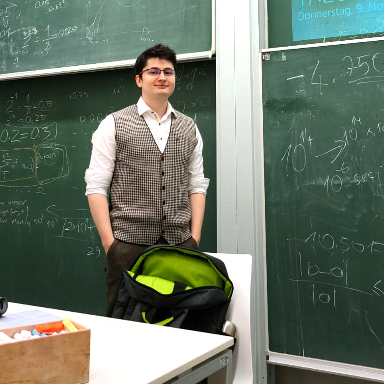

Hello!
I'm Berk Kıvılcım.
A PhD Student in Computer Science focusing on 3D Computer Vision and Geospatial Data

Education
Sabanci University
- 2025 - Ongoing
- Istanbul, Türkiye
- Doctor of Philosophy (Ph.D) in Computer Science & Engineering, CGPA: 3.78
- Fully Funded Scholarship: Tuition Waiver, Monthly Stippened, Free Accomodation
- Courses: Deep Learning (A), Machine Learning (A-), Evolutionary Biology for AI (A-), Data Mining (A-)
- Current Research Interest: Hierarchical 3D Built Environment with Gaussian Splatting
Karlsruhe Institute of Technology (KIT)
- 2022 - 2024
- Karlsruhe, Germany
- Master of Science in Remote Sensing and Geoinformatics, GPA: 1.3 (German Grading Scale - Very good)
- Elective Profile Module: Computer Vision and Geoinformatics
- Computer Vision Courses: Deep Learning for Computer Vision and Remote Sensing (1.0), Computer Vision and Remote Sensing (1.3), Advanced Topics in Computer Vision (1.3), Active Sensors for Computer Vision (1.7), Seminar Topics of Image Analysis (1.7)
- Geoinformatics Courses: Geoinformatics (1.0), Geo-Databases (1.0), 3D/4D GIS (1.0), Mobile GIS and Location Based Services (1.0)
- Remote Sensing Courses: Basics of Estimation Theory and its Application in Geoscience Remote Sensing (1.0), Hyperspectral Remote Sensing (2.0), Remote Sensing of the Atmosphere (2.0)
- Lab Rotation I: CityGML to Voxel Conversion for Geodetic Applications: Designing an Efficient Algorithm to Simulate Time Dilations to Test the Precision of Voxelized Methods (1.0)
- Lab Rotation II: Evaluation of NeRF Methods: Impact of Trajectories and Implications for Real-Time 3D Reconstruction (1.0)
Thesis
- Computer Graphics and Visualization Group (TU Delft)
- Institute of Photogrammetry and Remote Sensing (KIT)
- 2024
Studying the Geometric Convergence Behaviour of Neural Radiance Fields (NeRFs) for Improving Training Time
Novelties that contribute to literature:
- Proposed 3D geometric convergence and voxel based adaptive training termination strategy for NeRF.
- Developed depth-guided pixel masking approach to focus training on unconverged regions.
- Thesis, codes and implementation details shared on Github
Stuttgart University of Applied Sciences
- 2021 - 2022
- Stuttgart, Germany
- Took German language course for daily life and participated in lectures and completed assignments for the 1st semester of the Master's program of Photogrammetry and Geoinformatics before transferring to KIT
Hacettepe University
- 2016 - 2021
- Ankara, Turkey
- Bachelor of Science in Geomatics Engineering, GPA: 3.01/4.00 (Honours)
- Completed a one-year English Preparatory Program, 2016-2017
- Image Processing Courses: Data Structures & Algorithms (A1), Digital Image Processing (A2), Photogrammetric Image Analysis (A2), Photogrammetry (A3), Digital Imaging and Interpretation (B3), Fundamentals of Laser Scanning (B2), Signal Processing (C1), Remote Sensing (C1)
- Geoinformatics Courses: Geospatial Data Management (A1), Geographic Information Systems (A2), Programming in Geographic Information Systems (A2), Special Topics in Geomatics Engineering (A3), Spatial Analysis (B2)
Graduation Project
- Group of three
- 2021
Investigation of Forest Fires with Google Earth Engine
- Shared the algorithms and the process of using them with GEE on GitHub alongside a tutorial
- Reached the 2021 finals of the TUBITAK 2242 project competition in the environment and energy field
Publications
An Evolutionary Boost to Gaussian Splatting Optimization
- 22 August 2026
International Conference on Pattern Recognition (ICPR-2026), Bio-inspired methods for Pattern Recognition (BIOMAP) Workshop
Extending a Geodatabase Framework for AI-Based Analysis of Digital Elevation Models to Support Earth Observation Applications
- 11 Nov 2025
International Conference on Data Science and Artificial Intelligence. Singapore: Springer Nature Singapore, 2025
A Data-Driven Approach for Urban Heat Island Predictions: Rethinking the Evaluation Metrics and Data Processing
- 6 May 2025
The Journal of Urban Science. 2025, 9(5), 151
Density-Based Geometric Convergence of NeRFs at Training Time: Insights from Spatio-temporal Discretization
- 13 Dec 2024
The international Archives of the Photogrammetry, Remote Sensing and Spatial Information Sciences, Volume XLVIII-2/W7-2024, 49-56
Optical 3D Metrology (O3DM), 12–13 December 2024, Brescia, Italy
https://doi.org/10.5194/isprs-archives-XLVIII-2-W7-2024-49-2024
Experience
Sabancı University
- 2026
- Istanbul, Türkiye
- Prepared and delivered 10 lectures about some basics of programming, data science, machine learning and deep learning
Sabancı University
- 2026
- Istanbul, Türkiye
- Prepared and delivered 8 weekly recitations about Algorithmic Complexity, Tree Algorithms, Tree Traversals, Queue, Stacks, Arrays, Linked-Lists
Sabancı University
- 2026
- Istanbul, Türkiye
- Prepared and delivered 7 weekly coding recitations on Convolutional Neural Networks, Object Detection methods such as YoLo or R-CNN, Image Registration, Homography and SIFT, Camera Calibration, Stereo Imaging.
- Graded 5 programming assignments and provided feedback to students
Sabancı University
- 2025 - 2026
- Istanbul, Türkiye
- Prepared and delivered 9 weekly coding recitations on image processing topics, including pointwise operations, convolution, morphological operations, edge detection, filtering, hole filling, color space transformations, and feature detection.
- Graded 3 programming or mathematical proving assignments and provided feedback to students
Karlsruhe Institute of Technology (KIT)
- 2022 - 2024
- Karlsruhe, Germany
- Worked on the Distributed Simulation of Processes in Buildings and City Models research project, predicting urban heat islands to support urban planners by enhancing the correlation rate between indicator parameters, and insights about trained model evaluations with image comparison metrics.
Karlsruhe Institute of Technology (KIT)
- 2023 - 2024
- Karlsruhe, Germany
- Taught on several subjects, most importantly: Non-linear equations, parameter estimation, Gram-Schmidt Orthogonalization, Euclidean algorithm and Sturm Chain, Google Page Ranking, Discerete Fourier Transformation, Heat Equation, Finite Difference Method, numerical integrations
Akdeniz University
- 2020 - 2021
- Researched various machine-learning algorithms to analyze forest fires with the help of Google Earth Engine, laying the foundation of my undergraduate graduation project
Geotech Company
- 2019
- Ankara, Turkey
- Generated 3D surface and terrain models of the city of Medina
- Studied the impact of different filtering parameters on the creation of terrain models
Skills
- Computer Vision
- 3D Reconstruction
- Gaussian Splatting
- Neural Radiance Fields
- Artificial Intelligence
- Geospatial Data
- Remote Sensing
- Geodesy
- Photogrammetry
- Surveying
- Turkish (Native)
- English (Advanced)
- IELTS Academic: 7.0 (C1) (Listening: 7.5, Reading: 7.5, Writing: 6.0, Speaking: 6.0)
- YDS-English: 87.5
- Reviewer at IEEE Conference on Signal Processing and Communications Applications (SIU 2026)
- President of capoeira community at Hacettepe University (2017 - 2019)
- Competitor in the Capoeira World Championship, senior category (2018)
- Vice-president of capoeira community at Hacettepe University (2016 - 2017)
References
Prof. Dr. Martin Breunig
- Karlsruhe Institute of Technology
- martin.breunig@kit.edu
Dr. Patrick Erik Bradley
- Karlsruhe Institute of Technology
- erik.bradley@kit.edu
Prof. Dr. Mustafa Türker
- Hacettepe University
- mturker@hacettepe.edu.tr
Assoc. Prof. Berk Anbaroğlu
- Hacettepe University
- banbar@hacettepe.edu.tr